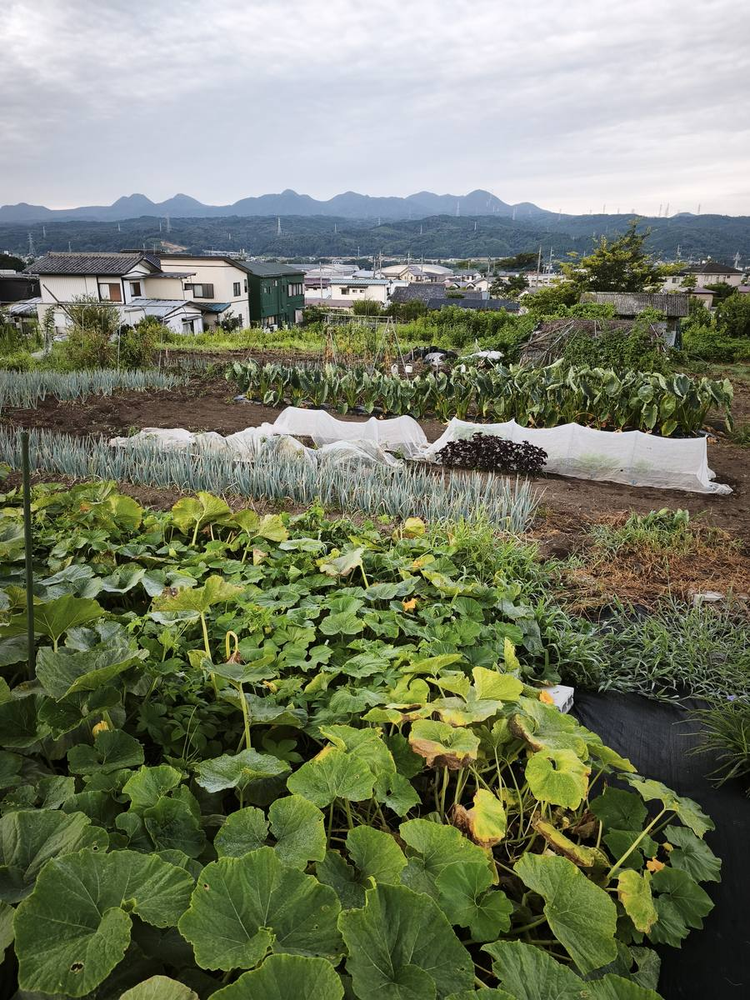
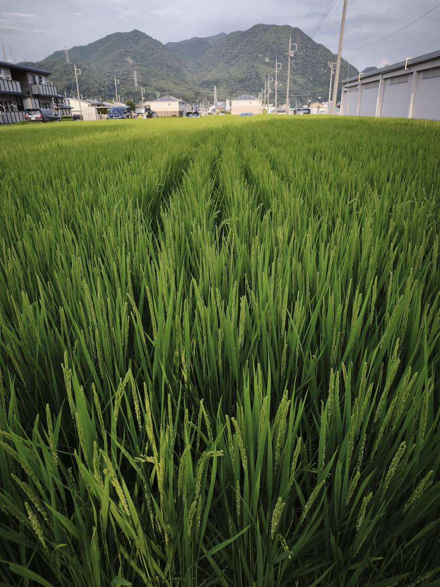

I got up before 5 a.m.
It was still quite dark outside.
Autumn is coming.
I went out to the fields.
Weeding. I prepared the area for cabbage, daikon radishes, and green beans.
In between, I planted seeds. Peas, pumpkins for the second time, and cucumbers for the fourth time.
The season is moving on, and the fields are also getting ready for the next crops.
These jobs may seem small and simple.
But growing vegetables is all about doing these small jobs, one by one.
Meanwhile, the cabbage is now three days old.
It has already started to grow.
I give the small sprouts some sunlight.
The rice plants are growing well and are now in the final stage of growth.
But that does not mean I can just wait for harvest.
I have to be careful about the water.
And then there are the stink bugs, especially the large groups of sparrows.
Luckily, the typhoons have not caused any damage so far.
But we never know what will happen next.
Only 30 more days.
Until the rice harvest is over, I cannot relax.
Meanwhile, the price of rice has fallen a lot.
It goes up and down.
Both farmers and consumers are being pushed around by the changing prices.
In the fields, when you plant a seed, it grows.
If you take care of it, it slowly grows bigger.
But rice prices do not work that way.
The soil is honest.
The market is not always so honest.

